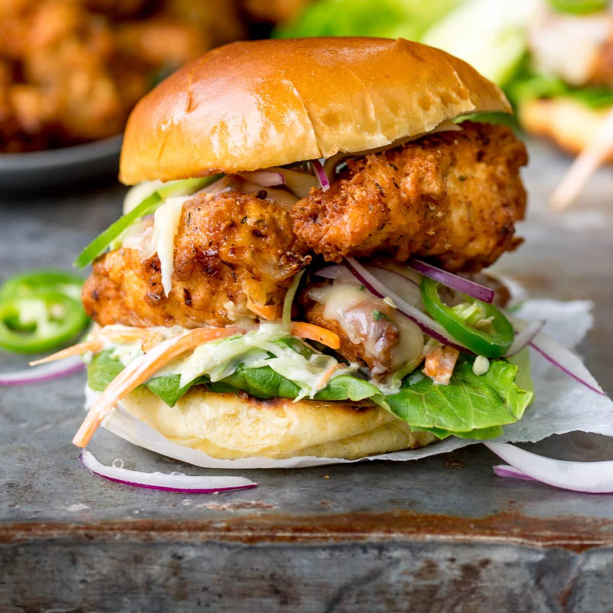

Learn how to make Chicken Burger with our easy-to-follow recipe.

Price : 100/-
Nutrition
kcal
fat
saturates
carbs
sugar
fibre
protein
salt
260
30g
9g
15g
8g
0.5g
15g
0.3g
Ingrediants:
3 large chicken breasts (sliced into long, thick strips)
240 ml (1 cup) buttermilk
½ tsp salt
¼ tsp white pepper
¼ tsp garlic salt
Method
Step 1:
Mix ground chicken, 1/4 cup bread crumbs, onion, egg, garlic, salt, and black pepper in a bowl. Moisten hands and shape chicken mixture, 2 tablespoons at a time, into flat, oval-shaped patties.
Step 2:
Spread remaining 1/4 cup bread crumbs into a shallow dish. Roll patties in bread crumbs to coat.
Step 3:
Heat olive oil in a large skillet over medium-high heat.
Step 4:
Cook patties in hot oil until deep brown in color on the bottom, 5 to 6 minutes. Turn patties and cook until other side is